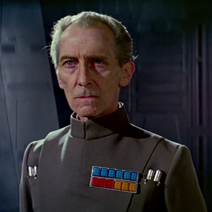
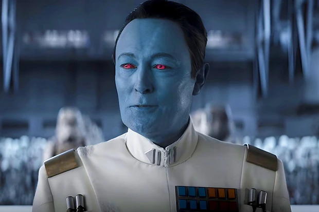
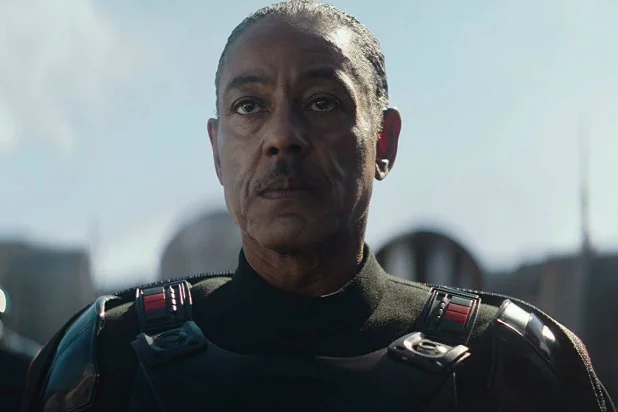

JOIN THE EMPIRE.
SECURE THE GALAXY.
The Galactic Empire stands as the greatest force for order the galaxy has ever known. Through discipline, loyalty, and unified strength, we secure peace across countless worlds. By joining our ranks, you become part of something far greater than yourself — a legacy of stability, duty, and honor. Enlist today and help forge the future of a safer, stronger Empire.

Grand Moff Tarkin
Architect of Imperial rule.
A master of order and discipline, Tarkin's strategic brilliance shaped the Empire's doctrine of fear and control. His leadership of the Death Star project remains a symbol of absolute authority.

Admiral Thrawn
Genius of Imperial strategy.
Known for his unmatched tactical mind, Thrawn studies enemy culture to outmaneuver entire fleets. His calm precision and loyalty to the Empire make him one of its most effective commanders.

Moff Gideon
Enforcer of the Emperor's will.
Commanding with intimidation and iron resolve, Gideon specializes in quelling insurgencies and retrieving classified Imperial assets. His reputation alone inspires obedience across Outer Rim sectors.